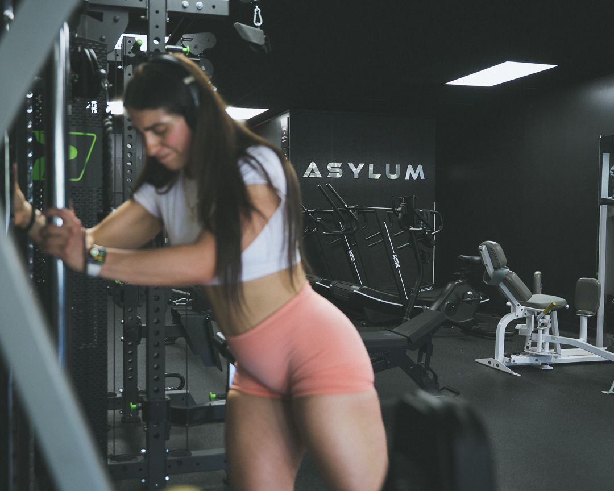
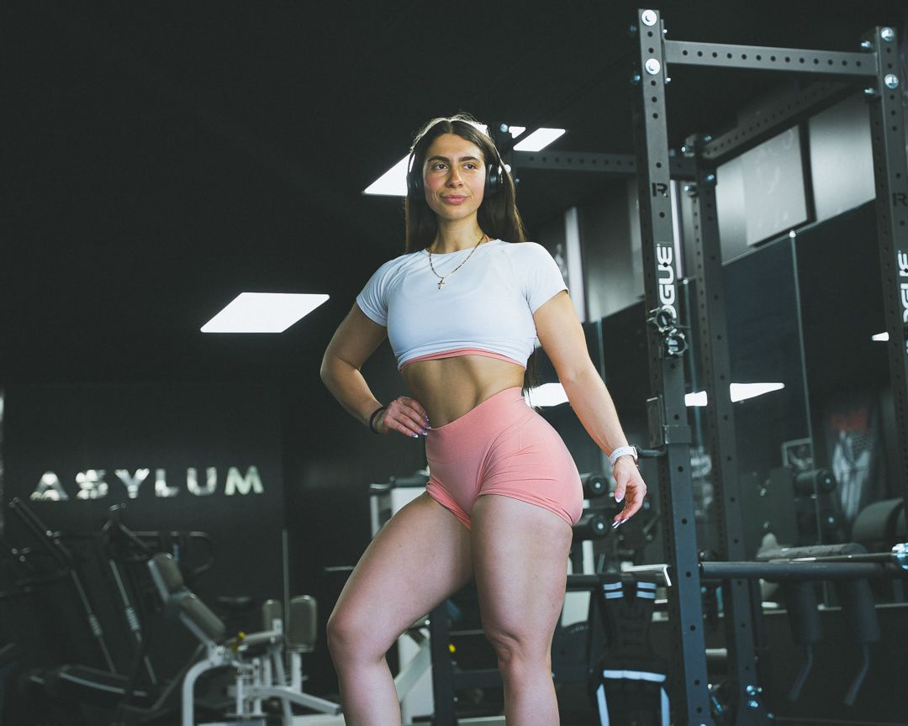
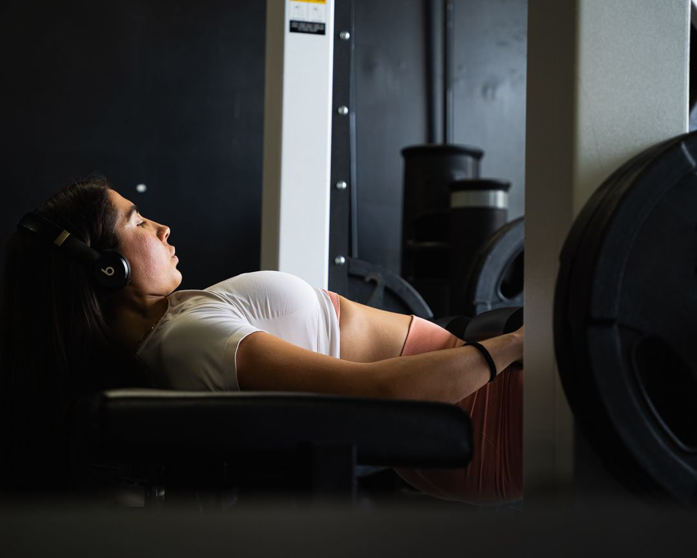

Acupuncture
Pain relief, recovery, and stress reduction through targeted, evidence-informed acupuncture.
Learn more →
Sports Performance & Recovery
Physician-guided recovery, acupuncture, cold plunge, and infrared sauna in Voorhees, NJ.

Train hard. Recover harder.Asylum Sports Performance & Recovery
Train hard, recover harder. Dr. Umar Nisar leads physician-guided recovery and movement care, alongside acupuncture with our licensed acupuncturist and a full recovery suite designed to keep you moving without pain and bouncing back faster between sessions.
The modalities
Pain relief, recovery, and stress reduction through targeted, evidence-informed acupuncture.
Learn more →Non-surgical relief for disc-related back and neck pain and sciatica.
Learn more →At-home exercises, stretches, and training guidance from Dr. Nisar to help you move better and stay resilient. Movement coaching, not formal physical therapy.
Contrast and cold immersion for recovery, resilience, and a serious mood lift.
Deep, sweat-it-out heat for circulation, relaxation, and recovery.
Deep tissue and sports massage to release tension and keep tissue healthy.

The recovery suite
A typical recovery day might pair an infrared sauna with a cold plunge and finish with an IV drip from the wellness side of the building. Your nervous system resets, inflammation drops, and you show up ready for the next session.
Questions
Your first visit includes an assessment of your daily lifestyle, any training you currently do, and any aches, pains, or issues you are dealing with, along with your goals for coming in. This lets us tailor your sessions to your specific needs.
No. Asylum operates on a 100% cash-pay basis across all services.
Booking is done through the links on each service page, so you can book directly for the service you are interested in.
Book a performance or recovery session with the Asylum Sports Performance team.